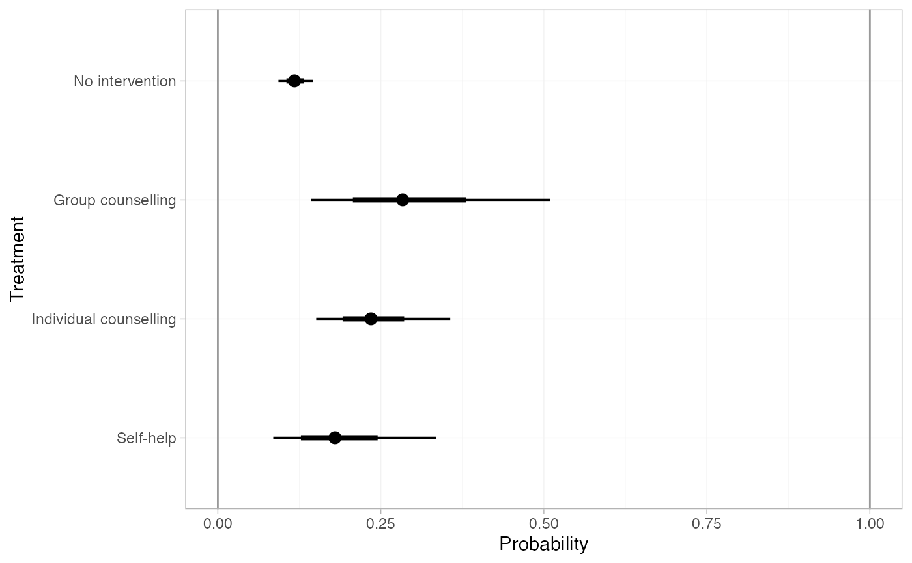
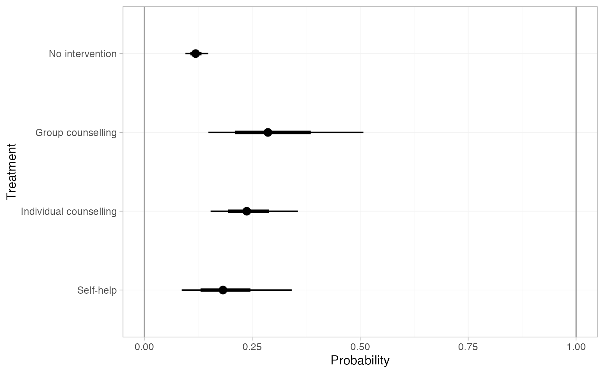
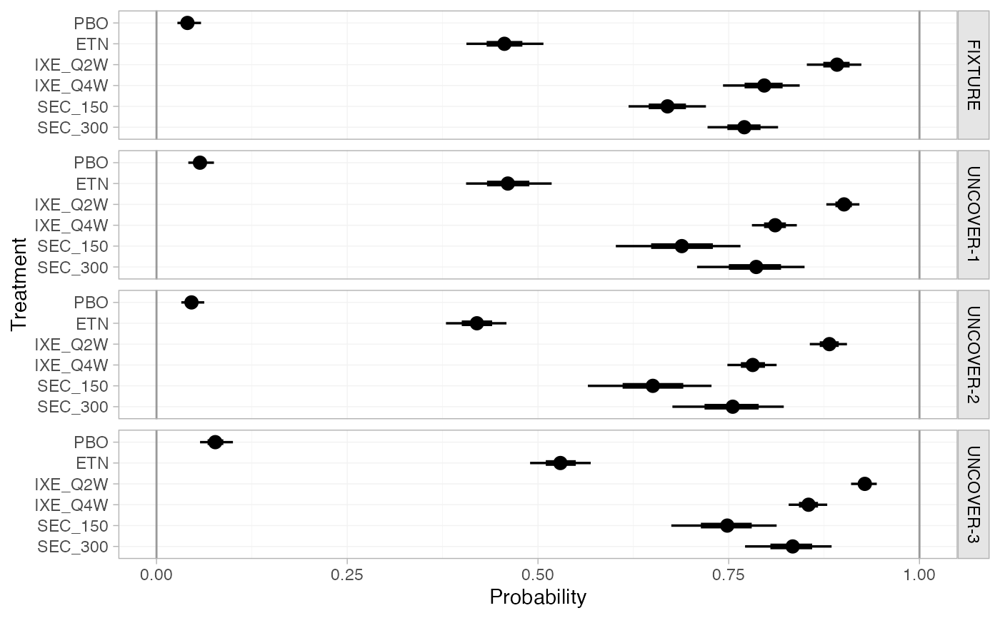
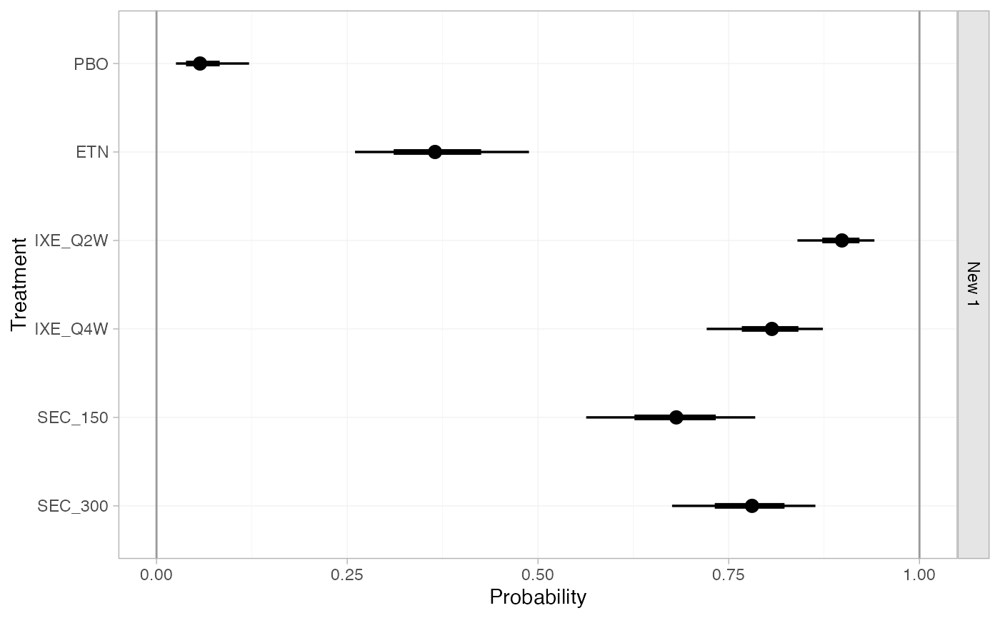
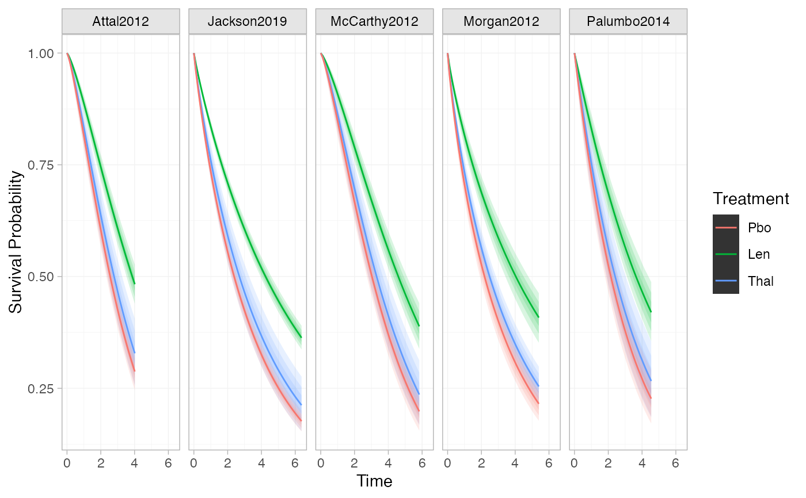
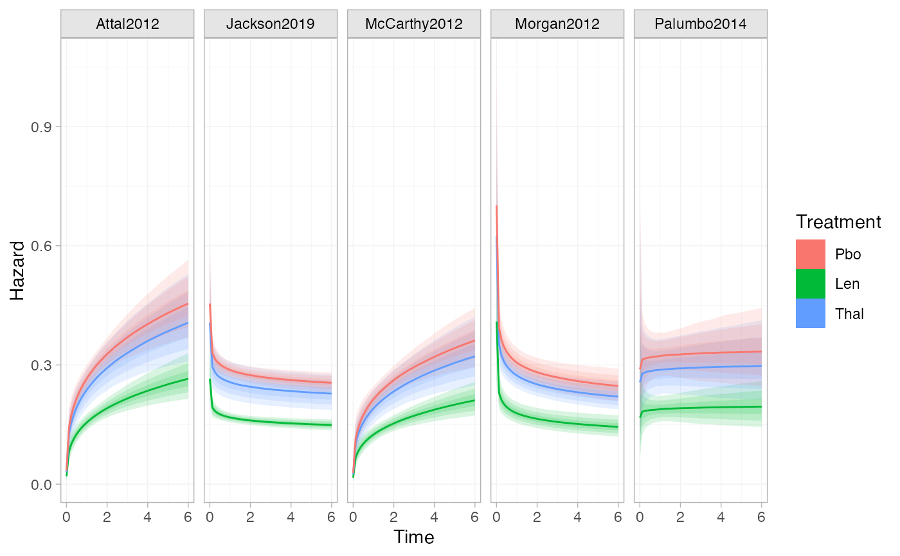
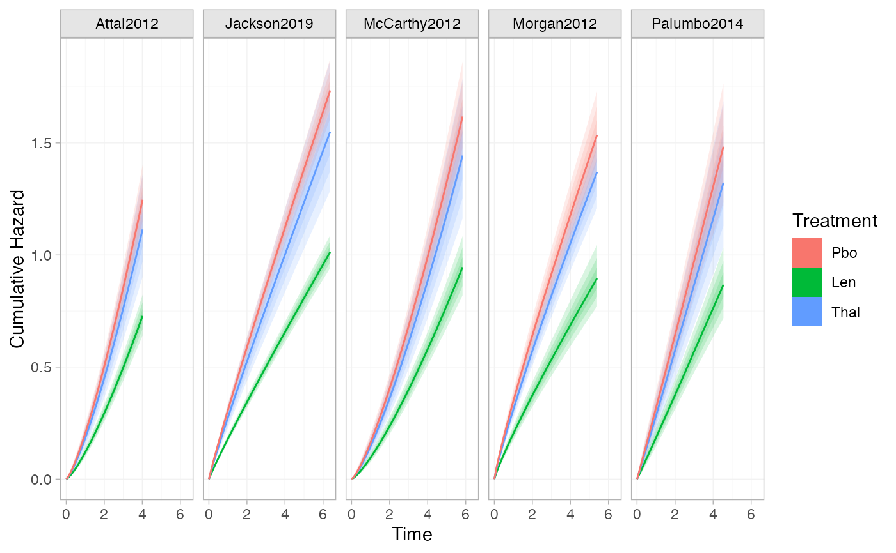
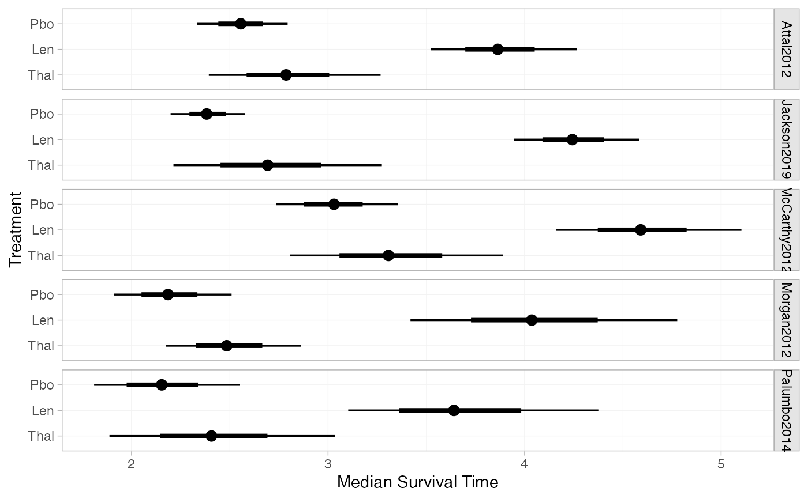

Obtain predictions of absolute effects from NMA models fitted with nma().
For example, if a model is fitted to binary data with a logit link, predicted
outcome probabilities or log odds can be produced. For survival models,
predictions can be made for survival probabilities, (cumulative) hazards,
(restricted) mean survival times, and quantiles including median survival
times.
When an IPD NMA or ML-NMR model has been fitted, predictions can be
produced either at an individual level or at an aggregate level.
Aggregate-level predictions are population-average absolute effects; these
are marginalised or standardised over a population. For example, average
event probabilities from a logistic regression, or marginal (standardised)
survival probabilities from a survival model.
Usage
# S3 method for class 'stan_nma'
predict(
object,
...,
baseline = NULL,
newdata = NULL,
study = NULL,
type = c("link", "response"),
level = c("aggregate", "individual"),
baseline_trt = NULL,
baseline_type = c("link", "response"),
baseline_level = c("individual", "aggregate"),
probs = c(0.025, 0.25, 0.5, 0.75, 0.975),
predictive_distribution = FALSE,
expand = TRUE,
summary = TRUE,
progress = FALSE,
trt_ref = NULL
)
# S3 method for class 'stan_nma_surv'
predict(
object,
times = NULL,
...,
baseline_trt = NULL,
baseline = NULL,
aux = NULL,
newdata = NULL,
study = NULL,
type = c("survival", "hazard", "cumhaz", "mean", "median", "quantile", "rmst", "link"),
quantiles = c(0.25, 0.5, 0.75),
level = c("aggregate", "individual"),
times_seq = NULL,
probs = c(0.025, 0.25, 0.5, 0.75, 0.975),
predictive_distribution = FALSE,
expand = TRUE,
summary = TRUE,
progress = interactive(),
trt_ref = NULL
)Arguments
- object
A
stan_nmaobject created bynma().- ...
Additional arguments, passed to
uniroot()for regression models ifbaseline_level = "aggregate".- baseline
An optional
distr()distribution for the baseline response (i.e. intercept), about which to produce absolute effects. Can also be a character string naming a study in the network to take the estimated baseline response distribution from. IfNULL, predictions are produced using the baseline response for each study in the network with IPD or arm-based AgD.For regression models, this may be a list of
distr()distributions (or study names in the network to use the baseline distributions from) of the same length as the number of studies innewdata, possibly named by the studies innewdataor otherwise in order of appearance innewdata.Use the
baseline_typeandbaseline_levelarguments to specify whether this distribution is on the response or linear predictor scale, and (for ML-NMR or models including IPD) whether this applies to an individual at the reference level of the covariates or over the entirenewdatapopulation, respectively. For example, in a model with a logit link withbaseline_type = "link", this would be a distribution for the baseline log odds of an event. For survival models,baselinealways corresponds to the intercept parameters in the linear predictor (i.e.baseline_typeis always"link", andbaseline_levelis"individual"for IPD NMA or ML-NMR, and"aggregate"for AgD NMA).Use the
baseline_trtargument to specify which treatment this distribution applies to.- newdata
Only required if a regression model is fitted and
baselineis specified. A data frame of covariate details, for which to produce predictions. Column names must match variables in the regression model.If
level = "aggregate"this should either be a data frame with integration points as produced byadd_integration()(one row per study), or a data frame with individual covariate values (one row per individual) which are summarised over.If
level = "individual"this should be a data frame of individual covariate values, one row per individual.If
NULL, predictions are produced for all studies with IPD and/or arm-based AgD in the network, depending on the value oflevel.- study
Column of
newdatawhich specifies study names or IDs. When not specified: ifnewdatacontains integration points produced byadd_integration(), studies will be labelled sequentially by row; otherwise data will be assumed to come from a single study.- type
Whether to produce predictions on the
"link"scale (the default, e.g. log odds) or"response"scale (e.g. probabilities).For survival models, the options are
"survival"for survival probabilities (the default),"hazard"for hazards,"cumhaz"for cumulative hazards,"mean"for mean survival times,"quantile"for quantiles of the survival time distribution,"median"for median survival times (equivalent totype = "quantile"withquantiles = 0.5),"rmst"for restricted mean survival times, or"link"for the linear predictor. Fortype = "survival","hazard"or"cumhaz", predictions are given at the times specified bytimesor at the event/censoring times in the network iftimes = NULL. Fortype = "rmst", the restricted time horizon is specified bytimes, or iftimes = NULLthe earliest last follow-up time amongst the studies in the network is used. Whenlevel = "aggregate", these all correspond to the standardised survival function (see details).- level
The level at which predictions are produced, either
"aggregate"(the default), or"individual". Ifbaselineis not specified, predictions are produced for all IPD studies in the network iflevelis"individual"or"aggregate", and for all arm-based AgD studies in the network iflevelis"aggregate".- baseline_trt
Treatment to which the
baselineresponse distribution refers, ifbaselineis specified. By default, the baseline response distribution will refer to the network reference treatment. Coerced to character string.- baseline_type
When a
baselinedistribution is given, specifies whether this corresponds to the"link"scale (the default, e.g. log odds) or"response"scale (e.g. probabilities). For survival models,baselinealways corresponds to the intercept parameters in the linear predictor (i.e.baseline_typeis always"link").- baseline_level
When a
baselinedistribution is given, specifies whether this corresponds to an individual at the reference level of the covariates ("individual", the default), or from an (unadjusted) average outcome on the reference treatment in thenewdatapopulation ("aggregate"). Ignored for AgD NMA, since the only option is"aggregate"in this instance. For survival models,baselinealways corresponds to the intercept parameters in the linear predictor (i.e.baseline_levelis"individual"for IPD NMA or ML-NMR, and"aggregate"for AgD NMA).- probs
Numeric vector of quantiles of interest to present in computed summary, default
c(0.025, 0.25, 0.5, 0.75, 0.975)- predictive_distribution
Logical, when a random effects model has been fitted, should the predictive distribution for absolute effects in a new study be returned? Default
FALSE.- expand
Logical, expand out predictions for every treatment (
TRUE), or only produce predictions for observed treatments (FALSE). DefaultTRUE.- summary
Logical, calculate posterior summaries? Default
TRUE.- progress
Logical, display progress for potentially long-running calculations? Population-average predictions from ML-NMR models are computationally intensive, especially for survival outcomes. Currently the default is to display progress only when running interactively and producing predictions for a survival ML-NMR model.
- trt_ref
Deprecated, renamed to
baseline_trt.- times
A numeric vector of times to evaluate predictions at. Alternatively, if
newdatais specified,timescan be the name of a column innewdatawhich contains the times. IfNULL(the default) then predictions are made at the event/censoring times from the studies included in the network (or according totimes_seq). Only used iftypeis"survival","hazard","cumhaz"or"rmst".- aux
An optional
distr()distribution for the auxiliary parameter(s) in the baseline hazard (e.g. shapes). Can also be a character string naming a study in the network to take the estimated auxiliary parameter distribution from. IfNULL, predictions are produced using the parameter estimates for each study in the network with IPD or arm-based AgD.For regression models, this may be a list of
distr()distributions (or study names in the network to use the auxiliary parameters from) of the same length as the number of studies innewdata, possibly named by the study names or otherwise in order of appearance innewdata.- quantiles
A numeric vector of quantiles of the survival time distribution to produce estimates for when
type = "quantile".- times_seq
A positive integer, when specified evaluate predictions at this many evenly-spaced event times between 0 and the latest follow-up time in each study, instead of every observed event/censoring time. Only used if
newdata = NULLandtypeis"survival","hazard"or"cumhaz". This can be useful for plotting survival or (cumulative) hazard curves, where prediction at every observed even/censoring time is unnecessary and can be slow. When a call from withinplot()is detected, e.g. likeplot(predict(fit, type = "survival")),times_seqwill default to 50.
Value
A nma_summary object if summary = TRUE, otherwise a list
containing a 3D MCMC array of samples and (for regression models) a data
frame of study information.
Aggregate-level predictions from IPD NMA and ML-NMR models
Population-average absolute effects can be produced from IPD NMA and ML-NMR
models with level = "aggregate". Predictions are averaged over the target
population (i.e. standardised/marginalised), either by (numerical)
integration over the joint covariate distribution (for AgD studies in the
network for ML-NMR, or AgD newdata with integration points created by
add_integration()), or by averaging predictions for a sample of individuals
(for IPD studies in the network for IPD NMA/ML-NMR, or IPD newdata).
For example, with a binary outcome, the population-average event probabilities on treatment \(k\) in study/population \(j\) are $$\bar{p}_{jk} = \int_\mathfrak{X} p_{jk}(\mathbf{x}) f_{jk}(\mathbf{x}) d\mathbf{x}$$ for a joint covariate distribution \(f_{jk}(\mathbf{x})\) with support \(\mathfrak{X}\) or $$\bar{p}_{jk} = \sum_i p_{jk}(\mathbf{x}_i)$$ for a sample of individuals with covariates \(\mathbf{x}_i\).
Population-average absolute predictions follow similarly for other types of outcomes, however for survival outcomes there are specific considerations.
Standardised survival predictions
Different types of population-average survival predictions, often called
standardised survival predictions, follow from the standardised survival
function created by integrating (or equivalently averaging) the
individual-level survival functions at each time \(t\):
$$\bar{S}_{jk}(t) = \int_\mathfrak{X} S_{jk}(t | \mathbf{x}) f_{jk}(\mathbf{x})
d\mathbf{x}$$
which is itself produced using type = "survival".
The standardised hazard function corresponding to this standardised
survival function is a weighted average of the individual-level hazard
functions
$$\bar{h}_{jk}(t) = \frac{\int_\mathfrak{X} S_{jk}(t | \mathbf{x}) h_{jk}(t | \mathbf{x}) f_{jk}(\mathbf{x})
d\mathbf{x} }{\bar{S}_{jk}(t)}$$
weighted by the probability of surviving to time \(t\). This is produced
using type = "hazard".
The corresponding standardised cumulative hazard function is
$$\bar{H}_{jk}(t) = -\log(\bar{S}_{jk}(t))$$
and is produced using type = "cumhaz".
Quantiles and medians of the standardised survival times are found by
solving
$$\bar{S}_{jk}(t) = 1-\alpha$$
for the \(\alpha\%\) quantile, using numerical root finding. These are
produced using type = "quantile" or "median".
(Restricted) means of the standardised survival times are found by
integrating
$$\mathrm{RMST}_{jk}(t^*) = \int_0^{t^*} \bar{S}_{jk}(t) dt$$
up to the restricted time horizon \(t^*\), with \(t^*=\infty\) for mean
standardised survival time. These are produced using type = "rmst" or
"mean".
See also
plot.nma_summary() for plotting the predictions.
Examples
## Smoking cessation
# \donttest{
# Run smoking RE NMA example if not already available
if (!exists("smk_fit_RE")) example("example_smk_re", run.donttest = TRUE)
# }
# \donttest{
# Predicted log odds of success in each study in the network
predict(smk_fit_RE)
#> ---------------------------------------------------------------------- Study: 1 ----
#>
#> mean sd 2.5% 25% 50% 75% 97.5%
#> pred[1: No intervention] -2.78 0.33 -3.44 -2.99 -2.77 -2.56 -2.17
#> pred[1: Group counselling] -1.68 0.52 -2.67 -2.03 -1.68 -1.34 -0.60
#> pred[1: Individual counselling] -1.94 0.39 -2.68 -2.20 -1.94 -1.69 -1.17
#> pred[1: Self-help] -2.28 0.51 -3.28 -2.62 -2.28 -1.95 -1.28
#> Bulk_ESS Tail_ESS Rhat
#> pred[1: No intervention] 5035 2967 1
#> pred[1: Group counselling] 2575 2222 1
#> pred[1: Individual counselling] 2547 2456 1
#> pred[1: Self-help] 2474 2656 1
#>
#> ---------------------------------------------------------------------- Study: 2 ----
#>
#> mean sd 2.5% 25% 50% 75% 97.5%
#> pred[2: No intervention] -2.54 0.78 -4.12 -3.02 -2.54 -2.03 -1.04
#> pred[2: Group counselling] -1.43 0.75 -2.93 -1.92 -1.43 -0.96 0.05
#> pred[2: Individual counselling] -1.70 0.76 -3.21 -2.19 -1.69 -1.21 -0.21
#> pred[2: Self-help] -2.04 0.78 -3.60 -2.55 -2.04 -1.53 -0.44
#> Bulk_ESS Tail_ESS Rhat
#> pred[2: No intervention] 2639 2638 1
#> pred[2: Group counselling] 3279 2690 1
#> pred[2: Individual counselling] 2929 2822 1
#> pred[2: Self-help] 3362 2986 1
#>
#> ---------------------------------------------------------------------- Study: 3 ----
#>
#> mean sd 2.5% 25% 50% 75% 97.5%
#> pred[3: No intervention] -2.14 0.12 -2.39 -2.22 -2.14 -2.06 -1.90
#> pred[3: Group counselling] -1.04 0.46 -1.90 -1.34 -1.05 -0.76 -0.11
#> pred[3: Individual counselling] -1.30 0.27 -1.82 -1.48 -1.31 -1.14 -0.75
#> pred[3: Self-help] -1.65 0.42 -2.48 -1.93 -1.64 -1.37 -0.81
#> Bulk_ESS Tail_ESS Rhat
#> pred[3: No intervention] 10078 2794 1
#> pred[3: Group counselling] 2049 2374 1
#> pred[3: Individual counselling] 1371 1961 1
#> pred[3: Self-help] 1972 2425 1
#>
#> ---------------------------------------------------------------------- Study: 4 ----
#>
#> mean sd 2.5% 25% 50% 75% 97.5%
#> pred[4: No intervention] -4.05 0.56 -5.20 -4.41 -4.03 -3.66 -3.03
#> pred[4: Group counselling] -2.95 0.69 -4.34 -3.41 -2.94 -2.47 -1.60
#> pred[4: Individual counselling] -3.21 0.58 -4.39 -3.58 -3.19 -2.81 -2.12
#> pred[4: Self-help] -3.55 0.68 -4.94 -3.99 -3.52 -3.10 -2.27
#> Bulk_ESS Tail_ESS Rhat
#> pred[4: No intervention] 4478 2698 1
#> pred[4: Group counselling] 3421 2831 1
#> pred[4: Individual counselling] 4256 3233 1
#> pred[4: Self-help] 3138 2350 1
#>
#> ---------------------------------------------------------------------- Study: 5 ----
#>
#> mean sd 2.5% 25% 50% 75% 97.5%
#> pred[5: No intervention] -2.15 0.14 -2.43 -2.25 -2.15 -2.05 -1.89
#> pred[5: Group counselling] -1.05 0.46 -1.91 -1.36 -1.06 -0.76 -0.10
#> pred[5: Individual counselling] -1.31 0.28 -1.86 -1.50 -1.32 -1.13 -0.74
#> pred[5: Self-help] -1.66 0.43 -2.49 -1.93 -1.65 -1.37 -0.81
#> Bulk_ESS Tail_ESS Rhat
#> pred[5: No intervention] 7861 2879 1
#> pred[5: Group counselling] 2036 2327 1
#> pred[5: Individual counselling] 1303 2159 1
#> pred[5: Self-help] 2006 2518 1
#>
#> ---------------------------------------------------------------------- Study: 6 ----
#>
#> mean sd 2.5% 25% 50% 75% 97.5%
#> pred[6: No intervention] -3.41 0.71 -4.92 -3.84 -3.35 -2.91 -2.18
#> pred[6: Group counselling] -2.30 0.80 -4.03 -2.81 -2.26 -1.76 -0.80
#> pred[6: Individual counselling] -2.57 0.71 -4.09 -3.00 -2.52 -2.07 -1.35
#> pred[6: Self-help] -2.91 0.79 -4.61 -3.40 -2.86 -2.37 -1.52
#> Bulk_ESS Tail_ESS Rhat
#> pred[6: No intervention] 3799 2249 1
#> pred[6: Group counselling] 3841 2217 1
#> pred[6: Individual counselling] 3673 2542 1
#> pred[6: Self-help] 3260 2482 1
#>
#> ---------------------------------------------------------------------- Study: 7 ----
#>
#> mean sd 2.5% 25% 50% 75% 97.5%
#> pred[7: No intervention] -3.02 0.45 -3.98 -3.30 -3.00 -2.71 -2.23
#> pred[7: Group counselling] -1.92 0.59 -3.10 -2.31 -1.90 -1.52 -0.79
#> pred[7: Individual counselling] -2.18 0.47 -3.20 -2.47 -2.15 -1.86 -1.33
#> pred[7: Self-help] -2.52 0.59 -3.77 -2.89 -2.51 -2.13 -1.45
#> Bulk_ESS Tail_ESS Rhat
#> pred[7: No intervention] 4114 2659 1
#> pred[7: Group counselling] 2873 2915 1
#> pred[7: Individual counselling] 2975 2600 1
#> pred[7: Self-help] 2958 2343 1
#>
#> ---------------------------------------------------------------------- Study: 8 ----
#>
#> mean sd 2.5% 25% 50% 75% 97.5%
#> pred[8: No intervention] -2.70 0.61 -4.04 -3.06 -2.65 -2.27 -1.64
#> pred[8: Group counselling] -1.59 0.71 -3.10 -2.04 -1.56 -1.11 -0.28
#> pred[8: Individual counselling] -1.86 0.61 -3.16 -2.24 -1.82 -1.44 -0.75
#> pred[8: Self-help] -2.20 0.69 -3.68 -2.62 -2.15 -1.74 -0.93
#> Bulk_ESS Tail_ESS Rhat
#> pred[8: No intervention] 3843 2423 1
#> pred[8: Group counselling] 3148 2843 1
#> pred[8: Individual counselling] 3561 2492 1
#> pred[8: Self-help] 3354 2330 1
#>
#> ---------------------------------------------------------------------- Study: 9 ----
#>
#> mean sd 2.5% 25% 50% 75% 97.5%
#> pred[9: No intervention] -1.84 0.42 -2.70 -2.11 -1.82 -1.55 -1.07
#> pred[9: Group counselling] -0.74 0.60 -1.93 -1.13 -0.75 -0.34 0.45
#> pred[9: Individual counselling] -1.00 0.47 -1.94 -1.30 -1.00 -0.68 -0.10
#> pred[9: Self-help] -1.34 0.58 -2.48 -1.73 -1.33 -0.95 -0.23
#> Bulk_ESS Tail_ESS Rhat
#> pred[9: No intervention] 5106 2848 1
#> pred[9: Group counselling] 2872 2757 1
#> pred[9: Individual counselling] 3062 2685 1
#> pred[9: Self-help] 2659 2832 1
#>
#> --------------------------------------------------------------------- Study: 10 ----
#>
#> mean sd 2.5% 25% 50% 75% 97.5%
#> pred[10: No intervention] -2.08 0.12 -2.32 -2.16 -2.08 -2.00 -1.85
#> pred[10: Group counselling] -0.98 0.46 -1.84 -1.28 -0.99 -0.70 -0.03
#> pred[10: Individual counselling] -1.24 0.27 -1.76 -1.43 -1.25 -1.06 -0.69
#> pred[10: Self-help] -1.58 0.42 -2.39 -1.85 -1.59 -1.32 -0.74
#> Bulk_ESS Tail_ESS Rhat
#> pred[10: No intervention] 8825 2537 1
#> pred[10: Group counselling] 2017 2407 1
#> pred[10: Individual counselling] 1387 1862 1
#> pred[10: Self-help] 1859 2425 1
#>
#> --------------------------------------------------------------------- Study: 11 ----
#>
#> mean sd 2.5% 25% 50% 75% 97.5%
#> pred[11: No intervention] -3.63 0.23 -4.11 -3.78 -3.62 -3.46 -3.19
#> pred[11: Group counselling] -2.52 0.49 -3.43 -2.85 -2.53 -2.21 -1.53
#> pred[11: Individual counselling] -2.79 0.34 -3.45 -3.01 -2.79 -2.57 -2.13
#> pred[11: Self-help] -3.13 0.44 -3.99 -3.42 -3.12 -2.85 -2.27
#> Bulk_ESS Tail_ESS Rhat
#> pred[11: No intervention] 7680 3062 1
#> pred[11: Group counselling] 2322 2209 1
#> pred[11: Individual counselling] 1978 2713 1
#> pred[11: Self-help] 2165 2512 1
#>
#> --------------------------------------------------------------------- Study: 12 ----
#>
#> mean sd 2.5% 25% 50% 75% 97.5%
#> pred[12: No intervention] -2.22 0.13 -2.48 -2.31 -2.22 -2.13 -1.98
#> pred[12: Group counselling] -1.12 0.46 -1.97 -1.42 -1.14 -0.82 -0.16
#> pred[12: Individual counselling] -1.38 0.27 -1.91 -1.56 -1.39 -1.21 -0.82
#> pred[12: Self-help] -1.72 0.42 -2.55 -2.00 -1.73 -1.45 -0.87
#> Bulk_ESS Tail_ESS Rhat
#> pred[12: No intervention] 7624 2502 1
#> pred[12: Group counselling] 2043 2308 1
#> pred[12: Individual counselling] 1339 2064 1
#> pred[12: Self-help] 1954 2280 1
#>
#> --------------------------------------------------------------------- Study: 13 ----
#>
#> mean sd 2.5% 25% 50% 75% 97.5%
#> pred[13: No intervention] -2.68 0.45 -3.61 -2.97 -2.66 -2.37 -1.84
#> pred[13: Group counselling] -1.57 0.63 -2.76 -2.00 -1.58 -1.16 -0.35
#> pred[13: Individual counselling] -1.84 0.49 -2.84 -2.15 -1.82 -1.50 -0.89
#> pred[13: Self-help] -2.18 0.59 -3.37 -2.56 -2.16 -1.78 -1.06
#> Bulk_ESS Tail_ESS Rhat
#> pred[13: No intervention] 5320 3097 1
#> pred[13: Group counselling] 3069 2785 1
#> pred[13: Individual counselling] 3355 2952 1
#> pred[13: Self-help] 3099 2741 1
#>
#> --------------------------------------------------------------------- Study: 14 ----
#>
#> mean sd 2.5% 25% 50% 75% 97.5%
#> pred[14: No intervention] -2.41 0.23 -2.89 -2.56 -2.40 -2.25 -1.98
#> pred[14: Group counselling] -1.31 0.50 -2.27 -1.64 -1.32 -0.99 -0.31
#> pred[14: Individual counselling] -1.57 0.33 -2.22 -1.79 -1.57 -1.36 -0.94
#> pred[14: Self-help] -1.91 0.46 -2.85 -2.22 -1.91 -1.62 -0.98
#> Bulk_ESS Tail_ESS Rhat
#> pred[14: No intervention] 6093 2503 1
#> pred[14: Group counselling] 2255 2358 1
#> pred[14: Individual counselling] 1804 2295 1
#> pred[14: Self-help] 2232 2317 1
#>
#> --------------------------------------------------------------------- Study: 15 ----
#>
#> mean sd 2.5% 25% 50% 75% 97.5%
#> pred[15: No intervention] -2.69 0.75 -4.30 -3.15 -2.63 -2.17 -1.39
#> pred[15: Group counselling] -1.59 0.73 -3.18 -2.03 -1.54 -1.09 -0.31
#> pred[15: Individual counselling] -1.85 0.75 -3.49 -2.31 -1.79 -1.33 -0.53
#> pred[15: Self-help] -2.20 0.80 -3.96 -2.70 -2.14 -1.64 -0.79
#> Bulk_ESS Tail_ESS Rhat
#> pred[15: No intervention] 3369 2196 1
#> pred[15: Group counselling] 3425 2668 1
#> pred[15: Individual counselling] 3446 2481 1
#> pred[15: Self-help] 3317 2260 1
#>
#> --------------------------------------------------------------------- Study: 16 ----
#>
#> mean sd 2.5% 25% 50% 75% 97.5%
#> pred[16: No intervention] -2.62 0.34 -3.32 -2.83 -2.60 -2.38 -2.00
#> pred[16: Group counselling] -1.51 0.55 -2.57 -1.87 -1.51 -1.15 -0.45
#> pred[16: Individual counselling] -1.78 0.41 -2.62 -2.04 -1.77 -1.50 -1.00
#> pred[16: Self-help] -2.12 0.47 -3.07 -2.43 -2.12 -1.81 -1.19
#> Bulk_ESS Tail_ESS Rhat
#> pred[16: No intervention] 5719 2751 1
#> pred[16: Group counselling] 2650 2813 1
#> pred[16: Individual counselling] 2780 2794 1
#> pred[16: Self-help] 2543 2887 1
#>
#> --------------------------------------------------------------------- Study: 17 ----
#>
#> mean sd 2.5% 25% 50% 75% 97.5%
#> pred[17: No intervention] -2.38 0.11 -2.60 -2.45 -2.37 -2.30 -2.17
#> pred[17: Group counselling] -1.27 0.46 -2.13 -1.57 -1.28 -0.98 -0.32
#> pred[17: Individual counselling] -1.54 0.27 -2.06 -1.71 -1.54 -1.37 -1.00
#> pred[17: Self-help] -1.88 0.42 -2.71 -2.14 -1.88 -1.61 -1.05
#> Bulk_ESS Tail_ESS Rhat
#> pred[17: No intervention] 7684 2965 1
#> pred[17: Group counselling] 2008 2209 1
#> pred[17: Individual counselling] 1250 1901 1
#> pred[17: Self-help] 1892 2389 1
#>
#> --------------------------------------------------------------------- Study: 18 ----
#>
#> mean sd 2.5% 25% 50% 75% 97.5%
#> pred[18: No intervention] -2.57 0.27 -3.10 -2.74 -2.56 -2.39 -2.07
#> pred[18: Group counselling] -1.46 0.52 -2.44 -1.81 -1.48 -1.12 -0.38
#> pred[18: Individual counselling] -1.73 0.36 -2.43 -1.96 -1.73 -1.49 -1.02
#> pred[18: Self-help] -2.07 0.48 -3.03 -2.39 -2.06 -1.76 -1.07
#> Bulk_ESS Tail_ESS Rhat
#> pred[18: No intervention] 6324 3093 1
#> pred[18: Group counselling] 2418 2511 1
#> pred[18: Individual counselling] 2083 2582 1
#> pred[18: Self-help] 2254 2649 1
#>
#> --------------------------------------------------------------------- Study: 19 ----
#>
#> mean sd 2.5% 25% 50% 75% 97.5%
#> pred[19: No intervention] -1.90 0.12 -2.14 -1.98 -1.90 -1.82 -1.66
#> pred[19: Group counselling] -0.80 0.46 -1.64 -1.10 -0.81 -0.51 0.17
#> pred[19: Individual counselling] -1.06 0.27 -1.58 -1.24 -1.07 -0.89 -0.51
#> pred[19: Self-help] -1.40 0.42 -2.22 -1.68 -1.40 -1.14 -0.54
#> Bulk_ESS Tail_ESS Rhat
#> pred[19: No intervention] 8218 3036 1
#> pred[19: Group counselling] 2015 2425 1
#> pred[19: Individual counselling] 1358 1988 1
#> pred[19: Self-help] 1926 2268 1
#>
#> --------------------------------------------------------------------- Study: 20 ----
#>
#> mean sd 2.5% 25% 50% 75% 97.5%
#> pred[20: No intervention] -2.80 0.13 -3.05 -2.88 -2.80 -2.72 -2.56
#> pred[20: Group counselling] -1.70 0.46 -2.56 -2.01 -1.71 -1.41 -0.72
#> pred[20: Individual counselling] -1.96 0.28 -2.49 -2.15 -1.97 -1.79 -1.39
#> pred[20: Self-help] -2.30 0.42 -3.14 -2.58 -2.30 -2.03 -1.47
#> Bulk_ESS Tail_ESS Rhat
#> pred[20: No intervention] 9148 3163 1
#> pred[20: Group counselling] 2063 2369 1
#> pred[20: Individual counselling] 1370 1815 1
#> pred[20: Self-help] 2017 2566 1
#>
#> --------------------------------------------------------------------- Study: 21 ----
#>
#> mean sd 2.5% 25% 50% 75% 97.5%
#> pred[21: No intervention] -1.13 0.81 -2.77 -1.64 -1.14 -0.59 0.45
#> pred[21: Group counselling] -0.02 0.86 -1.74 -0.58 -0.03 0.53 1.67
#> pred[21: Individual counselling] -0.29 0.79 -1.88 -0.80 -0.29 0.24 1.32
#> pred[21: Self-help] -0.63 0.79 -2.18 -1.12 -0.63 -0.13 0.94
#> Bulk_ESS Tail_ESS Rhat
#> pred[21: No intervention] 2842 2078 1
#> pred[21: Group counselling] 3371 2139 1
#> pred[21: Individual counselling] 3148 2706 1
#> pred[21: Self-help] 3594 2481 1
#>
#> --------------------------------------------------------------------- Study: 22 ----
#>
#> mean sd 2.5% 25% 50% 75% 97.5%
#> pred[22: No intervention] -2.41 0.85 -4.13 -2.96 -2.38 -1.86 -0.78
#> pred[22: Group counselling] -1.30 0.79 -2.88 -1.83 -1.29 -0.80 0.25
#> pred[22: Individual counselling] -1.57 0.84 -3.26 -2.11 -1.55 -1.03 0.07
#> pred[22: Self-help] -1.91 0.81 -3.54 -2.44 -1.89 -1.39 -0.36
#> Bulk_ESS Tail_ESS Rhat
#> pred[22: No intervention] 2937 2308 1
#> pred[22: Group counselling] 4198 2670 1
#> pred[22: Individual counselling] 3343 2461 1
#> pred[22: Self-help] 4160 2947 1
#>
#> --------------------------------------------------------------------- Study: 23 ----
#>
#> mean sd 2.5% 25% 50% 75% 97.5%
#> pred[23: No intervention] -2.31 0.83 -3.98 -2.84 -2.31 -1.78 -0.68
#> pred[23: Group counselling] -1.20 0.80 -2.75 -1.72 -1.22 -0.69 0.40
#> pred[23: Individual counselling] -1.47 0.81 -3.07 -1.99 -1.46 -0.96 0.13
#> pred[23: Self-help] -1.81 0.86 -3.51 -2.37 -1.81 -1.24 -0.11
#> Bulk_ESS Tail_ESS Rhat
#> pred[23: No intervention] 2967 2934 1
#> pred[23: Group counselling] 3970 2882 1
#> pred[23: Individual counselling] 3611 3006 1
#> pred[23: Self-help] 3270 2928 1
#>
#> --------------------------------------------------------------------- Study: 24 ----
#>
#> mean sd 2.5% 25% 50% 75% 97.5%
#> pred[24: No intervention] -2.80 0.86 -4.56 -3.35 -2.81 -2.23 -1.12
#> pred[24: Group counselling] -1.70 0.85 -3.37 -2.26 -1.70 -1.15 -0.03
#> pred[24: Individual counselling] -1.97 0.84 -3.67 -2.51 -1.96 -1.42 -0.31
#> pred[24: Self-help] -2.31 0.91 -4.09 -2.91 -2.30 -1.72 -0.56
#> Bulk_ESS Tail_ESS Rhat
#> pred[24: No intervention] 3002 2605 1
#> pred[24: Group counselling] 3702 2822 1
#> pred[24: Individual counselling] 3738 2786 1
#> pred[24: Self-help] 3070 2811 1
#>
# Predicted probabilities of success in each study in the network
predict(smk_fit_RE, type = "response")
#> ---------------------------------------------------------------------- Study: 1 ----
#>
#> mean sd 2.5% 25% 50% 75% 97.5% Bulk_ESS
#> pred[1: No intervention] 0.06 0.02 0.03 0.05 0.06 0.07 0.10 5035
#> pred[1: Group counselling] 0.17 0.07 0.06 0.12 0.16 0.21 0.35 2575
#> pred[1: Individual counselling] 0.13 0.04 0.06 0.10 0.13 0.16 0.24 2547
#> pred[1: Self-help] 0.10 0.05 0.04 0.07 0.09 0.12 0.22 2474
#> Tail_ESS Rhat
#> pred[1: No intervention] 2967 1
#> pred[1: Group counselling] 2222 1
#> pred[1: Individual counselling] 2456 1
#> pred[1: Self-help] 2656 1
#>
#> ---------------------------------------------------------------------- Study: 2 ----
#>
#> mean sd 2.5% 25% 50% 75% 97.5% Bulk_ESS
#> pred[2: No intervention] 0.09 0.07 0.02 0.05 0.07 0.12 0.26 2639
#> pred[2: Group counselling] 0.22 0.12 0.05 0.13 0.19 0.28 0.51 3279
#> pred[2: Individual counselling] 0.18 0.11 0.04 0.10 0.16 0.23 0.45 2929
#> pred[2: Self-help] 0.14 0.09 0.03 0.07 0.12 0.18 0.39 3362
#> Tail_ESS Rhat
#> pred[2: No intervention] 2638 1
#> pred[2: Group counselling] 2690 1
#> pred[2: Individual counselling] 2822 1
#> pred[2: Self-help] 2986 1
#>
#> ---------------------------------------------------------------------- Study: 3 ----
#>
#> mean sd 2.5% 25% 50% 75% 97.5% Bulk_ESS
#> pred[3: No intervention] 0.11 0.01 0.08 0.10 0.11 0.11 0.13 10078
#> pred[3: Group counselling] 0.27 0.09 0.13 0.21 0.26 0.32 0.47 2049
#> pred[3: Individual counselling] 0.22 0.05 0.14 0.19 0.21 0.24 0.32 1371
#> pred[3: Self-help] 0.17 0.06 0.08 0.13 0.16 0.20 0.31 1972
#> Tail_ESS Rhat
#> pred[3: No intervention] 2794 1
#> pred[3: Group counselling] 2374 1
#> pred[3: Individual counselling] 1961 1
#> pred[3: Self-help] 2425 1
#>
#> ---------------------------------------------------------------------- Study: 4 ----
#>
#> mean sd 2.5% 25% 50% 75% 97.5% Bulk_ESS
#> pred[4: No intervention] 0.02 0.01 0.01 0.01 0.02 0.03 0.05 4478
#> pred[4: Group counselling] 0.06 0.04 0.01 0.03 0.05 0.08 0.17 3421
#> pred[4: Individual counselling] 0.04 0.02 0.01 0.03 0.04 0.06 0.11 4256
#> pred[4: Self-help] 0.03 0.02 0.01 0.02 0.03 0.04 0.09 3138
#> Tail_ESS Rhat
#> pred[4: No intervention] 2698 1
#> pred[4: Group counselling] 2831 1
#> pred[4: Individual counselling] 3233 1
#> pred[4: Self-help] 2350 1
#>
#> ---------------------------------------------------------------------- Study: 5 ----
#>
#> mean sd 2.5% 25% 50% 75% 97.5% Bulk_ESS
#> pred[5: No intervention] 0.10 0.01 0.08 0.10 0.10 0.11 0.13 7861
#> pred[5: Group counselling] 0.27 0.09 0.13 0.20 0.26 0.32 0.47 2036
#> pred[5: Individual counselling] 0.22 0.05 0.13 0.18 0.21 0.24 0.32 1303
#> pred[5: Self-help] 0.17 0.06 0.08 0.13 0.16 0.20 0.31 2006
#> Tail_ESS Rhat
#> pred[5: No intervention] 2879 1
#> pred[5: Group counselling] 2327 1
#> pred[5: Individual counselling] 2159 1
#> pred[5: Self-help] 2518 1
#>
#> ---------------------------------------------------------------------- Study: 6 ----
#>
#> mean sd 2.5% 25% 50% 75% 97.5% Bulk_ESS
#> pred[6: No intervention] 0.04 0.03 0.01 0.02 0.03 0.05 0.10 3799
#> pred[6: Group counselling] 0.11 0.08 0.02 0.06 0.09 0.15 0.31 3841
#> pred[6: Individual counselling] 0.08 0.05 0.02 0.05 0.07 0.11 0.21 3673
#> pred[6: Self-help] 0.06 0.05 0.01 0.03 0.05 0.09 0.18 3260
#> Tail_ESS Rhat
#> pred[6: No intervention] 2249 1
#> pred[6: Group counselling] 2217 1
#> pred[6: Individual counselling] 2542 1
#> pred[6: Self-help] 2482 1
#>
#> ---------------------------------------------------------------------- Study: 7 ----
#>
#> mean sd 2.5% 25% 50% 75% 97.5% Bulk_ESS
#> pred[7: No intervention] 0.05 0.02 0.02 0.04 0.05 0.06 0.10 4114
#> pred[7: Group counselling] 0.14 0.07 0.04 0.09 0.13 0.18 0.31 2873
#> pred[7: Individual counselling] 0.11 0.04 0.04 0.08 0.10 0.14 0.21 2975
#> pred[7: Self-help] 0.08 0.04 0.02 0.05 0.08 0.11 0.19 2958
#> Tail_ESS Rhat
#> pred[7: No intervention] 2659 1
#> pred[7: Group counselling] 2915 1
#> pred[7: Individual counselling] 2600 1
#> pred[7: Self-help] 2343 1
#>
#> ---------------------------------------------------------------------- Study: 8 ----
#>
#> mean sd 2.5% 25% 50% 75% 97.5% Bulk_ESS
#> pred[8: No intervention] 0.07 0.04 0.02 0.04 0.07 0.09 0.16 3843
#> pred[8: Group counselling] 0.19 0.10 0.04 0.11 0.17 0.25 0.43 3148
#> pred[8: Individual counselling] 0.15 0.07 0.04 0.10 0.14 0.19 0.32 3561
#> pred[8: Self-help] 0.12 0.07 0.02 0.07 0.10 0.15 0.28 3354
#> Tail_ESS Rhat
#> pred[8: No intervention] 2423 1
#> pred[8: Group counselling] 2843 1
#> pred[8: Individual counselling] 2492 1
#> pred[8: Self-help] 2330 1
#>
#> ---------------------------------------------------------------------- Study: 9 ----
#>
#> mean sd 2.5% 25% 50% 75% 97.5% Bulk_ESS
#> pred[9: No intervention] 0.14 0.05 0.06 0.11 0.14 0.18 0.26 5106
#> pred[9: Group counselling] 0.34 0.13 0.13 0.24 0.32 0.42 0.61 2872
#> pred[9: Individual counselling] 0.28 0.09 0.13 0.21 0.27 0.34 0.48 3062
#> pred[9: Self-help] 0.22 0.10 0.08 0.15 0.21 0.28 0.44 2659
#> Tail_ESS Rhat
#> pred[9: No intervention] 2848 1
#> pred[9: Group counselling] 2757 1
#> pred[9: Individual counselling] 2685 1
#> pred[9: Self-help] 2832 1
#>
#> --------------------------------------------------------------------- Study: 10 ----
#>
#> mean sd 2.5% 25% 50% 75% 97.5% Bulk_ESS
#> pred[10: No intervention] 0.11 0.01 0.09 0.10 0.11 0.12 0.14 8825
#> pred[10: Group counselling] 0.28 0.09 0.14 0.22 0.27 0.33 0.49 2017
#> pred[10: Individual counselling] 0.23 0.05 0.15 0.19 0.22 0.26 0.33 1387
#> pred[10: Self-help] 0.18 0.06 0.08 0.14 0.17 0.21 0.32 1859
#> Tail_ESS Rhat
#> pred[10: No intervention] 2537 1
#> pred[10: Group counselling] 2407 1
#> pred[10: Individual counselling] 1862 1
#> pred[10: Self-help] 2425 1
#>
#> --------------------------------------------------------------------- Study: 11 ----
#>
#> mean sd 2.5% 25% 50% 75% 97.5% Bulk_ESS
#> pred[11: No intervention] 0.03 0.01 0.02 0.02 0.03 0.03 0.04 7680
#> pred[11: Group counselling] 0.08 0.04 0.03 0.05 0.07 0.10 0.18 2322
#> pred[11: Individual counselling] 0.06 0.02 0.03 0.05 0.06 0.07 0.11 1978
#> pred[11: Self-help] 0.05 0.02 0.02 0.03 0.04 0.05 0.09 2165
#> Tail_ESS Rhat
#> pred[11: No intervention] 3062 1
#> pred[11: Group counselling] 2209 1
#> pred[11: Individual counselling] 2713 1
#> pred[11: Self-help] 2512 1
#>
#> --------------------------------------------------------------------- Study: 12 ----
#>
#> mean sd 2.5% 25% 50% 75% 97.5% Bulk_ESS
#> pred[12: No intervention] 0.10 0.01 0.08 0.09 0.10 0.11 0.12 7624
#> pred[12: Group counselling] 0.26 0.09 0.12 0.19 0.24 0.30 0.46 2043
#> pred[12: Individual counselling] 0.20 0.04 0.13 0.17 0.20 0.23 0.31 1339
#> pred[12: Self-help] 0.16 0.06 0.07 0.12 0.15 0.19 0.29 1954
#> Tail_ESS Rhat
#> pred[12: No intervention] 2502 1
#> pred[12: Group counselling] 2308 1
#> pred[12: Individual counselling] 2064 1
#> pred[12: Self-help] 2280 1
#>
#> --------------------------------------------------------------------- Study: 13 ----
#>
#> mean sd 2.5% 25% 50% 75% 97.5% Bulk_ESS
#> pred[13: No intervention] 0.07 0.03 0.03 0.05 0.07 0.09 0.14 5320
#> pred[13: Group counselling] 0.19 0.09 0.06 0.12 0.17 0.24 0.41 3069
#> pred[13: Individual counselling] 0.15 0.06 0.06 0.10 0.14 0.18 0.29 3355
#> pred[13: Self-help] 0.11 0.06 0.03 0.07 0.10 0.14 0.26 3099
#> Tail_ESS Rhat
#> pred[13: No intervention] 3097 1
#> pred[13: Group counselling] 2785 1
#> pred[13: Individual counselling] 2952 1
#> pred[13: Self-help] 2741 1
#>
#> --------------------------------------------------------------------- Study: 14 ----
#>
#> mean sd 2.5% 25% 50% 75% 97.5% Bulk_ESS
#> pred[14: No intervention] 0.08 0.02 0.05 0.07 0.08 0.10 0.12 6093
#> pred[14: Group counselling] 0.22 0.09 0.09 0.16 0.21 0.27 0.42 2255
#> pred[14: Individual counselling] 0.18 0.05 0.10 0.14 0.17 0.20 0.28 1804
#> pred[14: Self-help] 0.14 0.06 0.05 0.10 0.13 0.17 0.27 2232
#> Tail_ESS Rhat
#> pred[14: No intervention] 2503 1
#> pred[14: Group counselling] 2358 1
#> pred[14: Individual counselling] 2295 1
#> pred[14: Self-help] 2317 1
#>
#> --------------------------------------------------------------------- Study: 15 ----
#>
#> mean sd 2.5% 25% 50% 75% 97.5% Bulk_ESS
#> pred[15: No intervention] 0.08 0.05 0.01 0.04 0.07 0.10 0.20 3369
#> pred[15: Group counselling] 0.19 0.10 0.04 0.12 0.18 0.25 0.42 3425
#> pred[15: Individual counselling] 0.16 0.09 0.03 0.09 0.14 0.21 0.37 3446
#> pred[15: Self-help] 0.12 0.08 0.02 0.06 0.11 0.16 0.31 3317
#> Tail_ESS Rhat
#> pred[15: No intervention] 2196 1
#> pred[15: Group counselling] 2668 1
#> pred[15: Individual counselling] 2481 1
#> pred[15: Self-help] 2260 1
#>
#> --------------------------------------------------------------------- Study: 16 ----
#>
#> mean sd 2.5% 25% 50% 75% 97.5% Bulk_ESS
#> pred[16: No intervention] 0.07 0.02 0.03 0.06 0.07 0.08 0.12 5719
#> pred[16: Group counselling] 0.19 0.08 0.07 0.13 0.18 0.24 0.39 2650
#> pred[16: Individual counselling] 0.15 0.05 0.07 0.12 0.15 0.18 0.27 2780
#> pred[16: Self-help] 0.12 0.05 0.04 0.08 0.11 0.14 0.23 2543
#> Tail_ESS Rhat
#> pred[16: No intervention] 2751 1
#> pred[16: Group counselling] 2813 1
#> pred[16: Individual counselling] 2794 1
#> pred[16: Self-help] 2887 1
#>
#> --------------------------------------------------------------------- Study: 17 ----
#>
#> mean sd 2.5% 25% 50% 75% 97.5% Bulk_ESS
#> pred[17: No intervention] 0.09 0.01 0.07 0.08 0.09 0.09 0.10 7684
#> pred[17: Group counselling] 0.23 0.08 0.11 0.17 0.22 0.27 0.42 2008
#> pred[17: Individual counselling] 0.18 0.04 0.11 0.15 0.18 0.20 0.27 1250
#> pred[17: Self-help] 0.14 0.05 0.06 0.11 0.13 0.17 0.26 1892
#> Tail_ESS Rhat
#> pred[17: No intervention] 2965 1
#> pred[17: Group counselling] 2209 1
#> pred[17: Individual counselling] 1901 1
#> pred[17: Self-help] 2389 1
#>
#> --------------------------------------------------------------------- Study: 18 ----
#>
#> mean sd 2.5% 25% 50% 75% 97.5% Bulk_ESS
#> pred[18: No intervention] 0.07 0.02 0.04 0.06 0.07 0.08 0.11 6324
#> pred[18: Group counselling] 0.20 0.08 0.08 0.14 0.19 0.25 0.41 2418
#> pred[18: Individual counselling] 0.16 0.05 0.08 0.12 0.15 0.18 0.27 2083
#> pred[18: Self-help] 0.12 0.05 0.05 0.08 0.11 0.15 0.26 2254
#> Tail_ESS Rhat
#> pred[18: No intervention] 3093 1
#> pred[18: Group counselling] 2511 1
#> pred[18: Individual counselling] 2582 1
#> pred[18: Self-help] 2649 1
#>
#> --------------------------------------------------------------------- Study: 19 ----
#>
#> mean sd 2.5% 25% 50% 75% 97.5% Bulk_ESS
#> pred[19: No intervention] 0.13 0.01 0.10 0.12 0.13 0.14 0.16 8218
#> pred[19: Group counselling] 0.32 0.10 0.16 0.25 0.31 0.37 0.54 2015
#> pred[19: Individual counselling] 0.26 0.05 0.17 0.22 0.26 0.29 0.38 1358
#> pred[19: Self-help] 0.21 0.07 0.10 0.16 0.20 0.24 0.37 1926
#> Tail_ESS Rhat
#> pred[19: No intervention] 3036 1
#> pred[19: Group counselling] 2425 1
#> pred[19: Individual counselling] 1988 1
#> pred[19: Self-help] 2268 1
#>
#> --------------------------------------------------------------------- Study: 20 ----
#>
#> mean sd 2.5% 25% 50% 75% 97.5% Bulk_ESS
#> pred[20: No intervention] 0.06 0.01 0.05 0.05 0.06 0.06 0.07 9148
#> pred[20: Group counselling] 0.16 0.07 0.07 0.12 0.15 0.20 0.33 2063
#> pred[20: Individual counselling] 0.13 0.03 0.08 0.10 0.12 0.14 0.20 1370
#> pred[20: Self-help] 0.10 0.04 0.04 0.07 0.09 0.12 0.19 2017
#> Tail_ESS Rhat
#> pred[20: No intervention] 3163 1
#> pred[20: Group counselling] 2369 1
#> pred[20: Individual counselling] 1815 1
#> pred[20: Self-help] 2566 1
#>
#> --------------------------------------------------------------------- Study: 21 ----
#>
#> mean sd 2.5% 25% 50% 75% 97.5% Bulk_ESS
#> pred[21: No intervention] 0.27 0.14 0.06 0.16 0.24 0.36 0.61 2842
#> pred[21: Group counselling] 0.49 0.18 0.15 0.36 0.49 0.63 0.84 3371
#> pred[21: Individual counselling] 0.44 0.17 0.13 0.31 0.43 0.56 0.79 3148
#> pred[21: Self-help] 0.36 0.16 0.10 0.25 0.35 0.47 0.72 3594
#> Tail_ESS Rhat
#> pred[21: No intervention] 2078 1
#> pred[21: Group counselling] 2139 1
#> pred[21: Individual counselling] 2706 1
#> pred[21: Self-help] 2481 1
#>
#> --------------------------------------------------------------------- Study: 22 ----
#>
#> mean sd 2.5% 25% 50% 75% 97.5% Bulk_ESS
#> pred[22: No intervention] 0.10 0.08 0.02 0.05 0.08 0.13 0.31 2937
#> pred[22: Group counselling] 0.24 0.13 0.05 0.14 0.22 0.31 0.56 4198
#> pred[22: Individual counselling] 0.20 0.12 0.04 0.11 0.17 0.26 0.52 3343
#> pred[22: Self-help] 0.15 0.10 0.03 0.08 0.13 0.20 0.41 4160
#> Tail_ESS Rhat
#> pred[22: No intervention] 2308 1
#> pred[22: Group counselling] 2670 1
#> pred[22: Individual counselling] 2461 1
#> pred[22: Self-help] 2947 1
#>
#> --------------------------------------------------------------------- Study: 23 ----
#>
#> mean sd 2.5% 25% 50% 75% 97.5% Bulk_ESS
#> pred[23: No intervention] 0.11 0.08 0.02 0.06 0.09 0.14 0.34 2967
#> pred[23: Group counselling] 0.26 0.14 0.06 0.15 0.23 0.33 0.60 3970
#> pred[23: Individual counselling] 0.21 0.13 0.04 0.12 0.19 0.28 0.53 3611
#> pred[23: Self-help] 0.17 0.12 0.03 0.09 0.14 0.22 0.47 3270
#> Tail_ESS Rhat
#> pred[23: No intervention] 2934 1
#> pred[23: Group counselling] 2882 1
#> pred[23: Individual counselling] 3006 1
#> pred[23: Self-help] 2928 1
#>
#> --------------------------------------------------------------------- Study: 24 ----
#>
#> mean sd 2.5% 25% 50% 75% 97.5% Bulk_ESS
#> pred[24: No intervention] 0.08 0.06 0.01 0.03 0.06 0.10 0.25 3002
#> pred[24: Group counselling] 0.18 0.12 0.03 0.09 0.15 0.24 0.49 3702
#> pred[24: Individual counselling] 0.15 0.10 0.02 0.08 0.12 0.19 0.42 3738
#> pred[24: Self-help] 0.12 0.10 0.02 0.05 0.09 0.15 0.36 3070
#> Tail_ESS Rhat
#> pred[24: No intervention] 2605 1
#> pred[24: Group counselling] 2822 1
#> pred[24: Individual counselling] 2786 1
#> pred[24: Self-help] 2811 1
#>
# Predicted probabilities in a population with 67 observed events out of 566
# individuals on No Intervention, corresponding to a Beta(67, 566 - 67)
# distribution on the baseline probability of response, using
# `baseline_type = "response"`
(smk_pred_RE <- predict(smk_fit_RE,
baseline = distr(qbeta, 67, 566 - 67),
baseline_type = "response",
type = "response"))
#> mean sd 2.5% 25% 50% 75% 97.5% Bulk_ESS
#> pred[No intervention] 0.12 0.01 0.09 0.11 0.12 0.13 0.15 4260
#> pred[Group counselling] 0.29 0.09 0.14 0.23 0.28 0.35 0.51 1990
#> pred[Individual counselling] 0.24 0.05 0.15 0.20 0.23 0.27 0.36 1399
#> pred[Self-help] 0.19 0.06 0.09 0.14 0.18 0.22 0.33 1929
#> Tail_ESS Rhat
#> pred[No intervention] 4099 1
#> pred[Group counselling] 2480 1
#> pred[Individual counselling] 1872 1
#> pred[Self-help] 2534 1
plot(smk_pred_RE, ref_line = c(0, 1))

# Predicted probabilities in a population with a baseline log odds of
# response on No Intervention given a Normal distribution with mean -2
# and SD 0.13, using `baseline_type = "link"` (the default)
# Note: this is approximately equivalent to the above Beta distribution on
# the baseline probability
(smk_pred_RE2 <- predict(smk_fit_RE,
baseline = distr(qnorm, mean = -2, sd = 0.13),
type = "response"))
#> mean sd 2.5% 25% 50% 75% 97.5% Bulk_ESS
#> pred[No intervention] 0.12 0.01 0.10 0.11 0.12 0.13 0.15 3990
#> pred[Group counselling] 0.30 0.09 0.15 0.23 0.29 0.35 0.51 2167
#> pred[Individual counselling] 0.24 0.05 0.15 0.21 0.24 0.27 0.36 1417
#> pred[Self-help] 0.19 0.07 0.09 0.14 0.18 0.23 0.34 1965
#> Tail_ESS Rhat
#> pred[No intervention] 3834 1
#> pred[Group counselling] 2241 1
#> pred[Individual counselling] 2070 1
#> pred[Self-help] 2378 1
plot(smk_pred_RE2, ref_line = c(0, 1))

# }
## Plaque psoriasis ML-NMR
# \donttest{
# Run plaque psoriasis ML-NMR example if not already available
if (!exists("pso_fit")) example("example_pso_mlnmr", run.donttest = TRUE)
# }
# \donttest{
# Predicted probabilities of response in each study in the network
(pso_pred <- predict(pso_fit, type = "response"))
#> ---------------------------------------------------------------- Study: FIXTURE ----
#>
#> mean sd 2.5% 25% 50% 75% 97.5% Bulk_ESS Tail_ESS
#> pred[FIXTURE: PBO] 0.04 0.01 0.03 0.04 0.04 0.05 0.06 4274 3387
#> pred[FIXTURE: ETN] 0.46 0.02 0.41 0.44 0.46 0.47 0.51 7461 3599
#> pred[FIXTURE: IXE_Q2W] 0.89 0.02 0.85 0.88 0.89 0.90 0.92 7204 3105
#> pred[FIXTURE: IXE_Q4W] 0.80 0.03 0.74 0.78 0.80 0.81 0.84 7572 3346
#> pred[FIXTURE: SEC_150] 0.67 0.03 0.62 0.65 0.67 0.69 0.72 8845 3029
#> pred[FIXTURE: SEC_300] 0.77 0.02 0.72 0.75 0.77 0.79 0.81 11504 3361
#> Rhat
#> pred[FIXTURE: PBO] 1
#> pred[FIXTURE: ETN] 1
#> pred[FIXTURE: IXE_Q2W] 1
#> pred[FIXTURE: IXE_Q4W] 1
#> pred[FIXTURE: SEC_150] 1
#> pred[FIXTURE: SEC_300] 1
#>
#> -------------------------------------------------------------- Study: UNCOVER-1 ----
#>
#> mean sd 2.5% 25% 50% 75% 97.5% Bulk_ESS Tail_ESS
#> pred[UNCOVER-1: PBO] 0.06 0.01 0.04 0.05 0.06 0.06 0.08 6292 3379
#> pred[UNCOVER-1: ETN] 0.46 0.03 0.41 0.44 0.46 0.48 0.52 6751 3186
#> pred[UNCOVER-1: IXE_Q2W] 0.90 0.01 0.88 0.89 0.90 0.91 0.92 7313 3039
#> pred[UNCOVER-1: IXE_Q4W] 0.81 0.02 0.78 0.80 0.81 0.82 0.84 8586 2906
#> pred[UNCOVER-1: SEC_150] 0.69 0.04 0.60 0.66 0.69 0.72 0.77 7559 3529
#> pred[UNCOVER-1: SEC_300] 0.78 0.04 0.71 0.76 0.79 0.81 0.85 8438 3329
#> Rhat
#> pred[UNCOVER-1: PBO] 1
#> pred[UNCOVER-1: ETN] 1
#> pred[UNCOVER-1: IXE_Q2W] 1
#> pred[UNCOVER-1: IXE_Q4W] 1
#> pred[UNCOVER-1: SEC_150] 1
#> pred[UNCOVER-1: SEC_300] 1
#>
#> -------------------------------------------------------------- Study: UNCOVER-2 ----
#>
#> mean sd 2.5% 25% 50% 75% 97.5% Bulk_ESS Tail_ESS
#> pred[UNCOVER-2: PBO] 0.05 0.01 0.03 0.04 0.05 0.05 0.06 5756 3167
#> pred[UNCOVER-2: ETN] 0.42 0.02 0.38 0.41 0.42 0.43 0.46 8224 3076
#> pred[UNCOVER-2: IXE_Q2W] 0.88 0.01 0.86 0.87 0.88 0.89 0.90 6786 2811
#> pred[UNCOVER-2: IXE_Q4W] 0.78 0.02 0.75 0.77 0.78 0.79 0.81 7236 2967
#> pred[UNCOVER-2: SEC_150] 0.65 0.04 0.57 0.62 0.65 0.68 0.73 7633 3184
#> pred[UNCOVER-2: SEC_300] 0.75 0.04 0.68 0.73 0.76 0.78 0.82 9655 3166
#> Rhat
#> pred[UNCOVER-2: PBO] 1
#> pred[UNCOVER-2: ETN] 1
#> pred[UNCOVER-2: IXE_Q2W] 1
#> pred[UNCOVER-2: IXE_Q4W] 1
#> pred[UNCOVER-2: SEC_150] 1
#> pred[UNCOVER-2: SEC_300] 1
#>
#> -------------------------------------------------------------- Study: UNCOVER-3 ----
#>
#> mean sd 2.5% 25% 50% 75% 97.5% Bulk_ESS Tail_ESS
#> pred[UNCOVER-3: PBO] 0.08 0.01 0.06 0.07 0.08 0.08 0.10 6126 3049
#> pred[UNCOVER-3: ETN] 0.53 0.02 0.49 0.52 0.53 0.54 0.57 7242 3170
#> pred[UNCOVER-3: IXE_Q2W] 0.93 0.01 0.91 0.92 0.93 0.93 0.94 5990 3128
#> pred[UNCOVER-3: IXE_Q4W] 0.85 0.01 0.83 0.85 0.85 0.86 0.88 7165 3133
#> pred[UNCOVER-3: SEC_150] 0.75 0.04 0.67 0.72 0.75 0.77 0.81 7236 3419
#> pred[UNCOVER-3: SEC_300] 0.83 0.03 0.77 0.81 0.83 0.85 0.88 8786 3289
#> Rhat
#> pred[UNCOVER-3: PBO] 1
#> pred[UNCOVER-3: ETN] 1
#> pred[UNCOVER-3: IXE_Q2W] 1
#> pred[UNCOVER-3: IXE_Q4W] 1
#> pred[UNCOVER-3: SEC_150] 1
#> pred[UNCOVER-3: SEC_300] 1
#>
plot(pso_pred, ref_line = c(0, 1))

# Predicted probabilites of response in a new target population, with means
# and SDs or proportions given by
new_agd_int <- data.frame(
bsa_mean = 0.6,
bsa_sd = 0.3,
prevsys = 0.1,
psa = 0.2,
weight_mean = 10,
weight_sd = 1,
durnpso_mean = 3,
durnpso_sd = 1
)
# We need to add integration points to this data frame of new data
# We use the weighted mean correlation matrix computed from the IPD studies
new_agd_int <- add_integration(new_agd_int,
durnpso = distr(qgamma, mean = durnpso_mean, sd = durnpso_sd),
prevsys = distr(qbern, prob = prevsys),
bsa = distr(qlogitnorm, mean = bsa_mean, sd = bsa_sd),
weight = distr(qgamma, mean = weight_mean, sd = weight_sd),
psa = distr(qbern, prob = psa),
cor = pso_net$int_cor,
n_int = 64)
# Predicted probabilities of achieving PASI 75 in this target population, given
# a Normal(-1.75, 0.08^2) distribution on the baseline probit-probability of
# response on Placebo (at the reference levels of the covariates), are given by
(pso_pred_new <- predict(pso_fit,
type = "response",
newdata = new_agd_int,
baseline = distr(qnorm, -1.75, 0.08)))
#> ------------------------------------------------------------------ Study: New 1 ----
#>
#> mean sd 2.5% 25% 50% 75% 97.5% Bulk_ESS Tail_ESS Rhat
#> pred[New 1: PBO] 0.06 0.03 0.03 0.04 0.06 0.08 0.12 5403 3335 1
#> pred[New 1: ETN] 0.37 0.06 0.26 0.33 0.37 0.41 0.49 5727 3527 1
#> pred[New 1: IXE_Q2W] 0.90 0.03 0.84 0.88 0.90 0.92 0.94 5901 3344 1
#> pred[New 1: IXE_Q4W] 0.80 0.04 0.73 0.78 0.81 0.83 0.87 6136 4046 1
#> pred[New 1: SEC_150] 0.68 0.06 0.57 0.64 0.68 0.72 0.79 5501 3796 1
#> pred[New 1: SEC_300] 0.78 0.05 0.67 0.75 0.78 0.81 0.86 6021 4058 1
#>
plot(pso_pred_new, ref_line = c(0, 1))

# }
## Progression free survival with newly-diagnosed multiple myeloma
# \donttest{
# Run newly-diagnosed multiple myeloma example if not already available
if (!exists("ndmm_fit")) example("example_ndmm", run.donttest = TRUE)
# }
# \donttest{
# We can produce a range of predictions from models with survival outcomes,
# chosen with the type argument to predict
# Predicted survival probabilities at 5 years
predict(ndmm_fit, type = "survival", times = 5)
#> -------------------------------------------------------------- Study: Attal2012 ----
#>
#> .time mean sd 2.5% 25% 50% 75% 97.5% Bulk_ESS
#> pred[Attal2012: Pbo, 1] 5 0.19 0.02 0.15 0.18 0.19 0.20 0.23 4945
#> pred[Attal2012: Len, 1] 5 0.38 0.02 0.33 0.36 0.38 0.40 0.43 5230
#> pred[Attal2012: Thal, 1] 5 0.23 0.04 0.16 0.20 0.23 0.25 0.30 5171
#> Tail_ESS Rhat
#> pred[Attal2012: Pbo, 1] 3325 1
#> pred[Attal2012: Len, 1] 2936 1
#> pred[Attal2012: Thal, 1] 3367 1
#>
#> ------------------------------------------------------------ Study: Jackson2019 ----
#>
#> .time mean sd 2.5% 25% 50% 75% 97.5% Bulk_ESS
#> pred[Jackson2019: Pbo, 1] 5 0.25 0.01 0.22 0.24 0.25 0.26 0.28 5020
#> pred[Jackson2019: Len, 1] 5 0.45 0.01 0.42 0.44 0.45 0.45 0.47 5434
#> pred[Jackson2019: Thal, 1] 5 0.29 0.03 0.23 0.27 0.29 0.31 0.36 4982
#> Tail_ESS Rhat
#> pred[Jackson2019: Pbo, 1] 3299 1
#> pred[Jackson2019: Len, 1] 3468 1
#> pred[Jackson2019: Thal, 1] 3218 1
#>
#> ----------------------------------------------------------- Study: McCarthy2012 ----
#>
#> .time mean sd 2.5% 25% 50% 75% 97.5% Bulk_ESS
#> pred[McCarthy2012: Pbo, 1] 5 0.27 0.02 0.22 0.25 0.27 0.28 0.31 4828
#> pred[McCarthy2012: Len, 1] 5 0.46 0.02 0.41 0.45 0.46 0.48 0.51 4819
#> pred[McCarthy2012: Thal, 1] 5 0.31 0.04 0.23 0.28 0.31 0.33 0.38 4772
#> Tail_ESS Rhat
#> pred[McCarthy2012: Pbo, 1] 3369 1
#> pred[McCarthy2012: Len, 1] 3160 1
#> pred[McCarthy2012: Thal, 1] 3572 1
#>
#> ------------------------------------------------------------- Study: Morgan2012 ----
#>
#> .time mean sd 2.5% 25% 50% 75% 97.5% Bulk_ESS
#> pred[Morgan2012: Pbo, 1] 5 0.24 0.02 0.20 0.22 0.24 0.25 0.28 5229
#> pred[Morgan2012: Len, 1] 5 0.43 0.03 0.38 0.41 0.43 0.45 0.49 5046
#> pred[Morgan2012: Thal, 1] 5 0.28 0.02 0.23 0.26 0.28 0.29 0.33 5154
#> Tail_ESS Rhat
#> pred[Morgan2012: Pbo, 1] 3606 1
#> pred[Morgan2012: Len, 1] 3638 1
#> pred[Morgan2012: Thal, 1] 3230 1
#>
#> ------------------------------------------------------------ Study: Palumbo2014 ----
#>
#> .time mean sd 2.5% 25% 50% 75% 97.5% Bulk_ESS
#> pred[Palumbo2014: Pbo, 1] 5 0.20 0.03 0.14 0.18 0.19 0.22 0.26 5684
#> pred[Palumbo2014: Len, 1] 5 0.38 0.04 0.32 0.36 0.38 0.41 0.45 5738
#> pred[Palumbo2014: Thal, 1] 5 0.23 0.04 0.15 0.20 0.23 0.26 0.32 5239
#> Tail_ESS Rhat
#> pred[Palumbo2014: Pbo, 1] 2666 1
#> pred[Palumbo2014: Len, 1] 3088 1
#> pred[Palumbo2014: Thal, 1] 3644 1
#>
# Survival curves
plot(predict(ndmm_fit, type = "survival"))

# Hazard curves
# Here we specify a vector of times to avoid attempting to plot infinite
# hazards for some studies at t=0
plot(predict(ndmm_fit, type = "hazard", times = seq(0.001, 6, length.out = 50)))

# Cumulative hazard curves
plot(predict(ndmm_fit, type = "cumhaz"))

# Survival time quantiles and median survival
predict(ndmm_fit, type = "quantile", quantiles = c(0.2, 0.5, 0.8))
#> -------------------------------------------------------------- Study: Attal2012 ----
#>
#> mean sd 2.5% 25% 50% 75% 97.5% Bulk_ESS
#> pred[Attal2012: Pbo, 0.2] 1.07 0.07 0.92 1.02 1.07 1.12 1.21 4443
#> pred[Attal2012: Pbo, 0.5] 2.56 0.12 2.34 2.47 2.55 2.63 2.79 4840
#> pred[Attal2012: Pbo, 0.8] 4.90 0.25 4.45 4.73 4.88 5.06 5.43 4918
#> pred[Attal2012: Len, 0.2] 1.61 0.09 1.43 1.55 1.61 1.68 1.80 4566
#> pred[Attal2012: Len, 0.5] 3.87 0.18 3.53 3.75 3.87 3.99 4.25 5350
#> pred[Attal2012: Len, 0.8] 7.42 0.46 6.59 7.10 7.39 7.72 8.40 4942
#> pred[Attal2012: Thal, 0.2] 1.17 0.11 0.96 1.09 1.16 1.24 1.39 4512
#> pred[Attal2012: Thal, 0.5] 2.79 0.23 2.38 2.63 2.78 2.94 3.27 4962
#> pred[Attal2012: Thal, 0.8] 5.35 0.45 4.55 5.04 5.33 5.65 6.31 5168
#> Tail_ESS Rhat
#> pred[Attal2012: Pbo, 0.2] 2964 1
#> pred[Attal2012: Pbo, 0.5] 3453 1
#> pred[Attal2012: Pbo, 0.8] 3414 1
#> pred[Attal2012: Len, 0.2] 3101 1
#> pred[Attal2012: Len, 0.5] 2958 1
#> pred[Attal2012: Len, 0.8] 3068 1
#> pred[Attal2012: Thal, 0.2] 2326 1
#> pred[Attal2012: Thal, 0.5] 3230 1
#> pred[Attal2012: Thal, 0.8] 3255 1
#>
#> ------------------------------------------------------------ Study: Jackson2019 ----
#>
#> mean sd 2.5% 25% 50% 75% 97.5% Bulk_ESS
#> pred[Jackson2019: Pbo, 0.2] 0.71 0.04 0.63 0.68 0.71 0.73 0.79 4094
#> pred[Jackson2019: Pbo, 0.5] 2.39 0.10 2.20 2.32 2.38 2.45 2.57 4334
#> pred[Jackson2019: Pbo, 0.8] 5.88 0.25 5.41 5.71 5.88 6.05 6.37 5202
#> pred[Jackson2019: Len, 0.2] 1.26 0.06 1.14 1.22 1.26 1.30 1.39 5714
#> pred[Jackson2019: Len, 0.5] 4.25 0.16 3.94 4.13 4.24 4.35 4.57 5497
#> pred[Jackson2019: Len, 0.8] 10.47 0.46 9.61 10.15 10.45 10.77 11.41 5081
#> pred[Jackson2019: Thal, 0.2] 0.80 0.09 0.64 0.74 0.80 0.86 0.98 4867
#> pred[Jackson2019: Thal, 0.5] 2.70 0.27 2.21 2.51 2.69 2.88 3.26 4938
#> pred[Jackson2019: Thal, 0.8] 6.66 0.67 5.44 6.19 6.63 7.10 8.05 5010
#> Tail_ESS Rhat
#> pred[Jackson2019: Pbo, 0.2] 2941 1
#> pred[Jackson2019: Pbo, 0.5] 3259 1
#> pred[Jackson2019: Pbo, 0.8] 3284 1
#> pred[Jackson2019: Len, 0.2] 3632 1
#> pred[Jackson2019: Len, 0.5] 3421 1
#> pred[Jackson2019: Len, 0.8] 3419 1
#> pred[Jackson2019: Thal, 0.2] 2989 1
#> pred[Jackson2019: Thal, 0.5] 3179 1
#> pred[Jackson2019: Thal, 0.8] 3333 1
#>
#> ----------------------------------------------------------- Study: McCarthy2012 ----
#>
#> mean sd 2.5% 25% 50% 75% 97.5% Bulk_ESS
#> pred[McCarthy2012: Pbo, 0.2] 1.26 0.10 1.07 1.20 1.26 1.33 1.45 4289
#> pred[McCarthy2012: Pbo, 0.5] 3.03 0.16 2.73 2.93 3.03 3.13 3.35 4251
#> pred[McCarthy2012: Pbo, 0.8] 5.83 0.32 5.26 5.60 5.80 6.04 6.51 4918
#> pred[McCarthy2012: Len, 0.2] 1.91 0.12 1.67 1.83 1.91 1.99 2.15 4463
#> pred[McCarthy2012: Len, 0.5] 4.60 0.24 4.15 4.44 4.59 4.76 5.08 4767
#> pred[McCarthy2012: Len, 0.8] 8.85 0.58 7.80 8.44 8.81 9.23 10.11 4930
#> pred[McCarthy2012: Thal, 0.2] 1.38 0.13 1.12 1.29 1.38 1.46 1.66 4524
#> pred[McCarthy2012: Thal, 0.5] 3.31 0.28 2.80 3.13 3.30 3.49 3.89 4597
#> pred[McCarthy2012: Thal, 0.8] 6.37 0.56 5.36 5.99 6.34 6.75 7.55 4819
#> Tail_ESS Rhat
#> pred[McCarthy2012: Pbo, 0.2] 3120 1
#> pred[McCarthy2012: Pbo, 0.5] 3588 1
#> pred[McCarthy2012: Pbo, 0.8] 3286 1
#> pred[McCarthy2012: Len, 0.2] 2917 1
#> pred[McCarthy2012: Len, 0.5] 3160 1
#> pred[McCarthy2012: Len, 0.8] 3680 1
#> pred[McCarthy2012: Thal, 0.2] 2965 1
#> pred[McCarthy2012: Thal, 0.5] 3412 1
#> pred[McCarthy2012: Thal, 0.8] 3678 1
#>
#> ------------------------------------------------------------- Study: Morgan2012 ----
#>
#> mean sd 2.5% 25% 50% 75% 97.5% Bulk_ESS
#> pred[Morgan2012: Pbo, 0.2] 0.61 0.05 0.51 0.57 0.60 0.64 0.72 4455
#> pred[Morgan2012: Pbo, 0.5] 2.20 0.16 1.91 2.09 2.19 2.30 2.52 4787
#> pred[Morgan2012: Pbo, 0.8] 5.73 0.43 4.98 5.42 5.71 6.01 6.65 5283
#> pred[Morgan2012: Len, 0.2] 1.12 0.10 0.93 1.05 1.11 1.18 1.34 4635
#> pred[Morgan2012: Len, 0.5] 4.06 0.36 3.42 3.80 4.04 4.29 4.82 5063
#> pred[Morgan2012: Len, 0.8] 10.59 1.06 8.74 9.84 10.51 11.26 12.85 5246
#> pred[Morgan2012: Thal, 0.2] 0.69 0.06 0.57 0.65 0.69 0.73 0.81 5366
#> pred[Morgan2012: Thal, 0.5] 2.50 0.18 2.16 2.37 2.49 2.61 2.87 5328
#> pred[Morgan2012: Thal, 0.8] 6.51 0.50 5.60 6.16 6.47 6.82 7.62 5076
#> Tail_ESS Rhat
#> pred[Morgan2012: Pbo, 0.2] 2969 1
#> pred[Morgan2012: Pbo, 0.5] 3436 1
#> pred[Morgan2012: Pbo, 0.8] 3567 1
#> pred[Morgan2012: Len, 0.2] 3468 1
#> pred[Morgan2012: Len, 0.5] 3563 1
#> pred[Morgan2012: Len, 0.8] 3034 1
#> pred[Morgan2012: Thal, 0.2] 3403 1
#> pred[Morgan2012: Thal, 0.5] 3357 1
#> pred[Morgan2012: Thal, 0.8] 3087 1
#>
#> ------------------------------------------------------------ Study: Palumbo2014 ----
#>
#> mean sd 2.5% 25% 50% 75% 97.5% Bulk_ESS
#> pred[Palumbo2014: Pbo, 0.2] 0.71 0.09 0.53 0.64 0.70 0.77 0.90 4408
#> pred[Palumbo2014: Pbo, 0.5] 2.15 0.19 1.80 2.02 2.15 2.28 2.55 5059
#> pred[Palumbo2014: Pbo, 0.8] 4.96 0.48 4.13 4.63 4.92 5.25 5.99 5612
#> pred[Palumbo2014: Len, 0.2] 1.20 0.13 0.96 1.11 1.19 1.28 1.45 4759
#> pred[Palumbo2014: Len, 0.5] 3.67 0.33 3.08 3.44 3.65 3.87 4.36 5615
#> pred[Palumbo2014: Len, 0.8] 8.46 0.99 6.77 7.77 8.35 9.04 10.71 5550
#> pred[Palumbo2014: Thal, 0.2] 0.79 0.12 0.57 0.71 0.79 0.87 1.04 4699
#> pred[Palumbo2014: Thal, 0.5] 2.42 0.29 1.89 2.21 2.41 2.61 3.02 4975
#> pred[Palumbo2014: Thal, 0.8] 5.56 0.73 4.29 5.05 5.50 6.02 7.12 5209
#> Tail_ESS Rhat
#> pred[Palumbo2014: Pbo, 0.2] 2553 1
#> pred[Palumbo2014: Pbo, 0.5] 3359 1
#> pred[Palumbo2014: Pbo, 0.8] 2709 1
#> pred[Palumbo2014: Len, 0.2] 3139 1
#> pred[Palumbo2014: Len, 0.5] 3322 1
#> pred[Palumbo2014: Len, 0.8] 3108 1
#> pred[Palumbo2014: Thal, 0.2] 3099 1
#> pred[Palumbo2014: Thal, 0.5] 3508 1
#> pred[Palumbo2014: Thal, 0.8] 3385 1
#>
plot(predict(ndmm_fit, type = "median"))

# Mean survival time
predict(ndmm_fit, type = "mean")
#> -------------------------------------------------------------- Study: Attal2012 ----
#>
#> mean sd 2.5% 25% 50% 75% 97.5% Bulk_ESS Tail_ESS
#> pred[Attal2012: Pbo] 3.14 0.15 2.87 3.03 3.13 3.23 3.45 4953 3301
#> pred[Attal2012: Len] 4.75 0.27 4.26 4.56 4.74 4.93 5.33 5082 3052
#> pred[Attal2012: Thal] 3.43 0.28 2.92 3.22 3.41 3.61 4.03 5160 3175
#> Rhat
#> pred[Attal2012: Pbo] 1
#> pred[Attal2012: Len] 1
#> pred[Attal2012: Thal] 1
#>
#> ------------------------------------------------------------ Study: Jackson2019 ----
#>
#> mean sd 2.5% 25% 50% 75% 97.5% Bulk_ESS Tail_ESS
#> pred[Jackson2019: Pbo] 3.65 0.15 3.36 3.54 3.65 3.75 3.95 5199 3346
#> pred[Jackson2019: Len] 6.49 0.29 5.96 6.29 6.48 6.68 7.08 5092 3450
#> pred[Jackson2019: Thal] 4.13 0.42 3.37 3.84 4.11 4.40 4.99 5014 3332
#> Rhat
#> pred[Jackson2019: Pbo] 1
#> pred[Jackson2019: Len] 1
#> pred[Jackson2019: Thal] 1
#>
#> ----------------------------------------------------------- Study: McCarthy2012 ----
#>
#> mean sd 2.5% 25% 50% 75% 97.5% Bulk_ESS Tail_ESS
#> pred[McCarthy2012: Pbo] 3.73 0.19 3.38 3.60 3.72 3.85 4.15 4779 3454
#> pred[McCarthy2012: Len] 5.66 0.35 5.05 5.43 5.64 5.88 6.40 4892 3298
#> pred[McCarthy2012: Thal] 4.08 0.35 3.44 3.84 4.05 4.31 4.80 4750 3534
#> Rhat
#> pred[McCarthy2012: Pbo] 1
#> pred[McCarthy2012: Len] 1
#> pred[McCarthy2012: Thal] 1
#>
#> ------------------------------------------------------------- Study: Morgan2012 ----
#>
#> mean sd 2.5% 25% 50% 75% 97.5% Bulk_ESS Tail_ESS
#> pred[Morgan2012: Pbo] 3.56 0.27 3.09 3.37 3.54 3.73 4.14 5282 3567
#> pred[Morgan2012: Len] 6.57 0.66 5.42 6.10 6.53 6.99 8.00 5248 2986
#> pred[Morgan2012: Thal] 4.04 0.31 3.47 3.82 4.02 4.24 4.73 5067 3165
#> Rhat
#> pred[Morgan2012: Pbo] 1
#> pred[Morgan2012: Len] 1
#> pred[Morgan2012: Thal] 1
#>
#> ------------------------------------------------------------ Study: Palumbo2014 ----
#>
#> mean sd 2.5% 25% 50% 75% 97.5% Bulk_ESS Tail_ESS
#> pred[Palumbo2014: Pbo] 3.09 0.29 2.58 2.89 3.06 3.27 3.72 5571 2765
#> pred[Palumbo2014: Len] 5.27 0.60 4.25 4.84 5.20 5.62 6.64 5551 3102
#> pred[Palumbo2014: Thal] 3.46 0.45 2.68 3.15 3.43 3.74 4.42 5191 3588
#> Rhat
#> pred[Palumbo2014: Pbo] 1
#> pred[Palumbo2014: Len] 1
#> pred[Palumbo2014: Thal] 1
#>
# Restricted mean survival time
# By default, the time horizon is the shortest follow-up time in the network
predict(ndmm_fit, type = "rmst")
#> -------------------------------------------------------------- Study: Attal2012 ----
#>
#> .time mean sd 2.5% 25% 50% 75% 97.5% Bulk_ESS
#> pred[Attal2012: Pbo] 4.01 2.49 0.06 2.37 2.45 2.49 2.54 2.61 4798
#> pred[Attal2012: Len] 4.01 2.99 0.05 2.89 2.96 2.99 3.03 3.09 5015
#> pred[Attal2012: Thal] 4.01 2.60 0.11 2.40 2.53 2.61 2.68 2.81 4865
#> Tail_ESS Rhat
#> pred[Attal2012: Pbo] 3348 1
#> pred[Attal2012: Len] 3659 1
#> pred[Attal2012: Thal] 3243 1
#>
#> ------------------------------------------------------------ Study: Jackson2019 ----
#>
#> .time mean sd 2.5% 25% 50% 75% 97.5% Bulk_ESS
#> pred[Jackson2019: Pbo] 4.01 2.36 0.04 2.27 2.33 2.36 2.39 2.44 4216
#> pred[Jackson2019: Len] 4.01 2.91 0.03 2.84 2.88 2.91 2.93 2.97 5743
#> pred[Jackson2019: Thal] 4.01 2.48 0.10 2.28 2.41 2.48 2.55 2.67 4919
#> Tail_ESS Rhat
#> pred[Jackson2019: Pbo] 3100 1
#> pred[Jackson2019: Len] 3998 1
#> pred[Jackson2019: Thal] 3170 1
#>
#> ----------------------------------------------------------- Study: McCarthy2012 ----
#>
#> .time mean sd 2.5% 25% 50% 75% 97.5% Bulk_ESS
#> pred[McCarthy2012: Pbo] 4.01 2.71 0.07 2.57 2.66 2.71 2.76 2.84 4147
#> pred[McCarthy2012: Len] 4.01 3.16 0.05 3.05 3.12 3.16 3.19 3.26 4400
#> pred[McCarthy2012: Thal] 4.01 2.81 0.10 2.61 2.75 2.82 2.88 3.01 4543
#> Tail_ESS Rhat
#> pred[McCarthy2012: Pbo] 3665 1
#> pred[McCarthy2012: Len] 3216 1
#> pred[McCarthy2012: Thal] 3321 1
#>
#> ------------------------------------------------------------- Study: Morgan2012 ----
#>
#> .time mean sd 2.5% 25% 50% 75% 97.5% Bulk_ESS
#> pred[Morgan2012: Pbo] 4.01 2.26 0.07 2.12 2.21 2.26 2.31 2.41 4728
#> pred[Morgan2012: Len] 4.01 2.83 0.07 2.69 2.79 2.83 2.88 2.97 4816
#> pred[Morgan2012: Thal] 4.01 2.39 0.07 2.25 2.35 2.39 2.44 2.53 5355
#> Tail_ESS Rhat
#> pred[Morgan2012: Pbo] 3404 1
#> pred[Morgan2012: Len] 3750 1
#> pred[Morgan2012: Thal] 3588 1
#>
#> ------------------------------------------------------------ Study: Palumbo2014 ----
#>
#> .time mean sd 2.5% 25% 50% 75% 97.5% Bulk_ESS
#> pred[Palumbo2014: Pbo] 4.01 2.25 0.10 2.04 2.18 2.25 2.32 2.45 4890
#> pred[Palumbo2014: Len] 4.01 2.81 0.08 2.65 2.76 2.82 2.87 2.97 5211
#> pred[Palumbo2014: Thal] 4.01 2.38 0.14 2.10 2.28 2.38 2.47 2.63 4942
#> Tail_ESS Rhat
#> pred[Palumbo2014: Pbo] 3358 1
#> pred[Palumbo2014: Len] 3665 1
#> pred[Palumbo2014: Thal] 3296 1
#>
# An alternative restriction time can be set using the times argument
predict(ndmm_fit, type = "rmst", times = 5) # 5-year RMST
#> -------------------------------------------------------------- Study: Attal2012 ----
#>
#> .time mean sd 2.5% 25% 50% 75% 97.5% Bulk_ESS
#> pred[Attal2012: Pbo] 5 2.73 0.08 2.57 2.67 2.72 2.78 2.88 4860
#> pred[Attal2012: Len] 5 3.41 0.07 3.27 3.37 3.41 3.46 3.55 5222
#> pred[Attal2012: Thal] 5 2.88 0.14 2.60 2.78 2.88 2.97 3.15 4961
#> Tail_ESS Rhat
#> pred[Attal2012: Pbo] 3463 1
#> pred[Attal2012: Len] 3449 1
#> pred[Attal2012: Thal] 3150 1
#>
#> ------------------------------------------------------------ Study: Jackson2019 ----
#>
#> .time mean sd 2.5% 25% 50% 75% 97.5% Bulk_ESS
#> pred[Jackson2019: Pbo] 5 2.64 0.06 2.53 2.60 2.64 2.68 2.75 4355
#> pred[Jackson2019: Len] 5 3.38 0.05 3.29 3.35 3.38 3.41 3.47 5685
#> pred[Jackson2019: Thal] 5 2.80 0.14 2.53 2.71 2.81 2.90 3.06 4932
#> Tail_ESS Rhat
#> pred[Jackson2019: Pbo] 3287 1
#> pred[Jackson2019: Len] 3671 1
#> pred[Jackson2019: Thal] 3261 1
#>
#> ----------------------------------------------------------- Study: McCarthy2012 ----
#>
#> .time mean sd 2.5% 25% 50% 75% 97.5% Bulk_ESS
#> pred[McCarthy2012: Pbo] 5 3.02 0.09 2.85 2.96 3.02 3.08 3.19 4182
#> pred[McCarthy2012: Len] 5 3.66 0.07 3.51 3.61 3.66 3.71 3.80 4395
#> pred[McCarthy2012: Thal] 5 3.16 0.14 2.89 3.07 3.17 3.26 3.43 4586
#> Tail_ESS Rhat
#> pred[McCarthy2012: Pbo] 3657 1
#> pred[McCarthy2012: Len] 3362 1
#> pred[McCarthy2012: Thal] 3345 1
#>
#> ------------------------------------------------------------- Study: Morgan2012 ----
#>
#> .time mean sd 2.5% 25% 50% 75% 97.5% Bulk_ESS
#> pred[Morgan2012: Pbo] 5 2.53 0.09 2.35 2.47 2.53 2.59 2.72 4830
#> pred[Morgan2012: Len] 5 3.29 0.10 3.10 3.23 3.29 3.36 3.48 4909
#> pred[Morgan2012: Thal] 5 2.70 0.09 2.51 2.64 2.70 2.76 2.89 5334
#> Tail_ESS Rhat
#> pred[Morgan2012: Pbo] 3436 1
#> pred[Morgan2012: Len] 3715 1
#> pred[Morgan2012: Thal] 3545 1
#>
#> ------------------------------------------------------------ Study: Palumbo2014 ----
#>
#> .time mean sd 2.5% 25% 50% 75% 97.5% Bulk_ESS
#> pred[Palumbo2014: Pbo] 5 2.48 0.13 2.23 2.39 2.48 2.56 2.73 5051
#> pred[Palumbo2014: Len] 5 3.23 0.11 3.01 3.16 3.23 3.31 3.45 5533
#> pred[Palumbo2014: Thal] 5 2.64 0.18 2.28 2.52 2.65 2.77 2.97 5022
#> Tail_ESS Rhat
#> pred[Palumbo2014: Pbo] 3578 1
#> pred[Palumbo2014: Len] 3421 1
#> pred[Palumbo2014: Thal] 3378 1
#>
# }